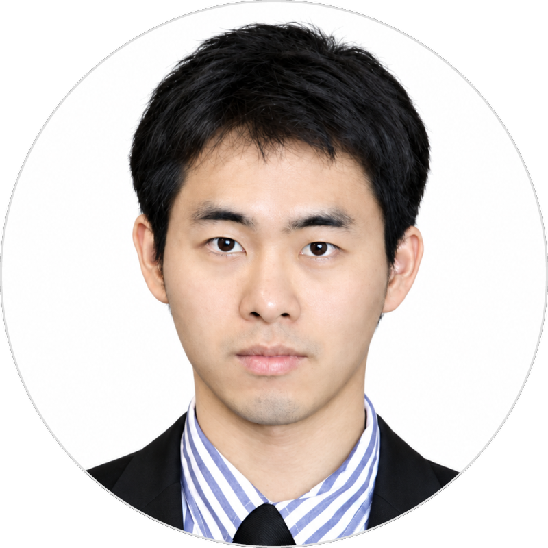

Eun Kwang Lee, (이은광, 李恩光), Ph.D.
Associate professor
Department of Chemical Engineering, Pukyong National University (PKNU)
Busan, 48513, Republic of Korea
Nano-interface Electronics Lab (NIE LAB)
Office: Room 1106, Engineering Building 1, Daeyeon Campus, Pukyong National University, 45, Yongso-ro, Nam-gu, Busan 48513, Republic of Korea
(48513) 부산광역시 남구 용소로 45 부경대학교 대연캠퍼스 공학1관 1106호
Laboratory: Room 301, Building 13 (formerly Engineering Building #4), Yongdang Campus, Pukyong National University, 365, Sinseon-ro, Nam-gu, Busan 48547, Republic of Korea
(48547) 부산광역시 남구 신선로 365 부경대학교 용당캠퍼스 용당13관 (구 4공학관) 301호
E-mail: eklee@pknu.ac.kr
Tel: +82-51-629-6438
Homepage: http://sites.google.com/view/nielab
Google Scholar: Eun Kwang Lee - Google Scholar
Education
M.S. & Ph.D. Mar. 2012 – Feb. 2017
Energy Engineering, School of Energy and Chemical Engineering, Ulsan National Institute of Science and Technology (UNIST)
Research Advisor: Prof. Joon Hak Oh (Current affiliation: Seoul National University), Prof. Byeong-Su Kim (Current affiliation: Yonsei University)
Beneficiary of Global Ph.D. Fellowship (National Research Foundation)
B. S. Mar. 2005 – Feb. 2012
Chemical Engineering, Pusan National University
(Military service in Republic of Korea Air Force, Apr. 2006 – Jun. 2008)
Professional Experiences
Mar. 2025 – present
Associate professor, Department of Chemical Engineering, Pukyong National University
Mar. 2022 – Feb. 2025
Assistant Professor, Department of Chemical Engineering, Pukyong National University
Aug. 2019 – Feb. 2022
Staff engineer, Division of Component solution, Samsung Electro-Mechanics
Research topic: Development of multilayer ceramic capacitors (MLCCs) and their components including metal electrode and high-performance dielectric materials
Jul. 2018 – June. 2019
Postdoctoral Scholar, Department of Biomedical Engineering, Purdue University
Research topic: Fabrication of bio-inspired electronic and optoelectronic device using transfer printing
Research Advisor: Prof. Chi Hwan Lee (Purdue University, Biomedical Engineering)
Mar. 2017 – Jun. 2018
Postdoctoral Scholar, Department of Chemical Engineering, POSTECH
Research topic: Development of smart organic electronic device using conductive polymers and two-dimensional nanomaterials
Research Advisor: Prof. Joon Hak Oh
Honors and Awards
The Best Ph.D Thesis Award, The Polymer Society of Korea, Apr. 2018
신진연구인력 우수 논문상, Pohang University of Science and Technology, Feb. 2018
Global Ph.D. Fellowship, National Research Foundation, Mar. 2012 – Feb. 2017 (National Research Foundation, $150,000 for 5 years)
Proposal title: High Performance Soft Nano-electronic Devices Based on Graphene and Self-Assembled Organic Semiconductor
Samsung Human Tech Paper Award, 2016
Paper title: Highly Flexible Organic Nanofiber Phototransistors Fabricated on a Textile Composite for Wearable Photosensors
Editorial work
A guest editor of the Special issue on Micromachines, MDPI Micromachine, Apr. 2021 – Mar. 2022
Special issue title: ‘Hybrid Organic Electronics: Material, Structure and Application’